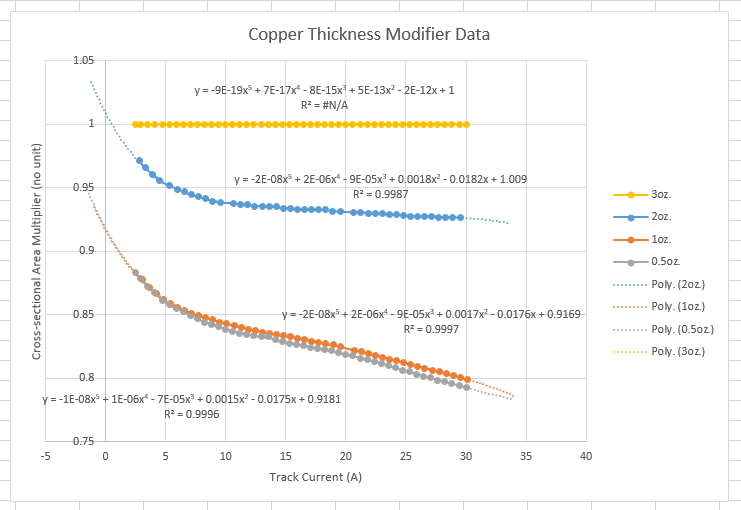
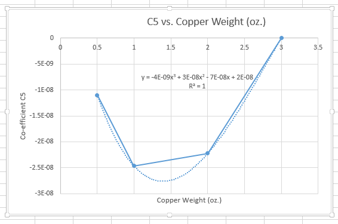

This calculator can find the minimum allowed PCB track width for a given continuous current. Takes into account the allowed temperature rise, copper track thickness, proximity to planes, total thickness of the PCB, and PCB material in accordance with IPC-2152.
The calculator uses equations built from the data provided in the IPC-2152 graphs.Data points were extracted from the graphs using WebPlotDigitizer (a great program by-the-way). Suitable trend lines were then fitted. In the case of the three variable graphs, trend lines were fitted to the coefficients of the first set of trend lines.
I believe the accuracy of the calculator (w.r.t. the IPC-2152 graphs) to be quite high, within the range of data provided by these graphs. Outside of this, extrapolation could become inaccurate quickly, due to the use of 5th order polynomial's being used to model some of the data (this was the best choice). Other graph were modelled with power equations of the form y=Ax^B, and are likely to be more accurate that the polynomial during extrapolation.
Below is an example of the trend-line fitting process. This image shows the "Copper Thickness Modifier" data from IPC-2152, along with 5th order polynomials being fitted to each data set. The data for the 3oz. copper weight is a horizontal line at y=1 by definition.
The co-efficients of the above trend lines were then plotted against copper weight (aka. track thickness). The graph below is co-efficient C5 (the co-efficient infront of x^5) against copper weight. These had their own trend lines fitted. Note that there are only four data points, AND the fitted trend-line is a third-degree polynomial, which is guaranteed to fit the data perfectly. This is probably the most dangerous part of the "discrete graphed data sets to continuous equations" conversion.
The current in assumed to be constant (DC). However, you can use the RMS value for a pulsed current as long as the pulses are fast enough.
The temperature of the PCB material should NEVER exceed the relative thermal index (RTI) of the material. This is defined in UL746B as the temperature at which 50% of the materials properties are retained after 100,000 hours.
Remember this calculator does not take into account other nearby heat sources.